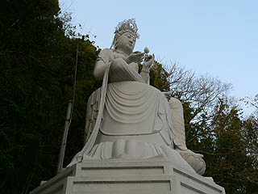

朝護孫子寺は奈良と大阪の境にある生駒山系の南にある古刹である。
この生駒山系というのは実に不思議な場所で、関西の民間信仰の一大集積地といえるほど様々な
インディーズ系のお寺や神社が密集している。
例えばこんな。
そんな生駒山系の北の雄が生駒聖天だとすれば南の雄は間違いなくここ信貴山朝護孫子寺であろう。
美術の世界では
信貴山縁起絵巻で有名だが、一般的には
虎の寺としてその名を馳せている。
境内には数多くの虎の石像やハリボテがウロウロしていて、かなり芳ばしい按配になっている。

まさにタイガーテンプル、だ。
そもそもこの寺が虎尽くしになったのには理由がある。
今から約1400年前、聖徳太子が物部守屋を討伐する際、この地で毘沙門天から必勝の秘法を授かったのが寅年、寅日、寅の刻だったのに由来しているそうな。
右を向いても左を向いてもまあ〜、見事に虎だらけ。
本坊の玄関にも虎のハリボテ。
虎が逃げ出さないようにご丁寧に檻まで作ってあったのはウケタ。
ここにも虎…じゃなかった。これは馬に乗った聖徳太子だ。
長崎平和祈念像でお馴染み北村西望氏の作。
灯籠の根元にも虎が巻きついている。
これだけ虎だらけだったら阪神ファンの方々もさぞかし気分が宜しいことであろう。
中には札束を咥えた虎の石像、なんてのも。
しかも札束には
１億円と彫られており、ご丁寧に賽銭が刺さっていた。
１円玉や５円玉ばかりだったけどこれで１億円がゲットできれば費用対効果は抜群、ということか？
この1億円という額って祈願のひとつの目安のように思える。
小学生みたいに1万兆円下さーい！とか言ってたら舐めんじゃねえぞ！と虎に食われそうだし、逆に百万円だと妙にリアルというかそんな額でワシを煩わせるな！とこれまた食われちゃいそう…
まあ、今の時代において幸福の相場というのが1億円なのだろうな。え？幸せは金で買えない？ああ、そうでしたねー。
そんな虎尽くしの境内の一画に数年前、最新兵器が投入された。
虎の胎内潜り、である。
入り口はこんな。
虎穴に入らずんば虎子を得ず、というほどではないが入ってみよう。

内部は四国八十八ヶ所お砂踏み＆大量の絵馬。
通り抜けて振り返ってみれば…
逆サイドも虎の口になってました！
いくら虎の寺とはいえこれは中々凄いねー。

ちなみにこの虎トンネルの隣には
銭亀堂という金運アップの人気スポットがある。
おばちゃんの名調子に合わせて参拝者の財布を石臼にのせてグルグル回すのだ。
しかも亀のお守りと一緒に貰うのが1億円札！これで千円は安い！信貴山に行かれた際はお見逃しなく。
（あくまでも個人の感想であり、効果を確約するものではありません）
まさにトラトラトラ！的
オフェンシブ寺院の様相を呈している。
境内のあちらこちらに参拝者の熱いパッションが反映されまくっていてクラクラしてくる。
こちらは寅薬師。傍らに寅を従えている。
ブロンズの虎の頭部と前足がピッカピカに輝いている。
足を撫でればお足（お金）が戻り、頭を撫でればぼけ封じ、牙を撫でれば立身出世、尻尾を撫でれば延命長寿、と
たった一匹で民間信仰のツボを見事に完備している。
弁天サマを祀る派手な祠。
次から次へと参拝者が訪れていた。広大な境内には数多くの祠やお堂があるが、その中でもトップクラスの人気っぷりであった。
そんなこんなで本堂。本尊は毘沙門天である。
山上の懸造だけあって恐ろしいほど眺めがよい。
何でも
日本で最初に毘沙門天が現れたところで、毘沙門信仰の総本山とか。
本堂下には
戒壇巡りがある。
この本堂は昭和になってから再建されたもので、以前から戒壇巡りがあったのかどうかは定かではない。
スリに注意かあ。戒壇巡りにスリがいるのかあ。油断出来んなあ。
戒壇巡りの途中には如意宝珠という宝珠がある…と説明してありました。
随分前に1回入っただけなので中がどんなだかは忘れちゃいました…。
本堂近くにあったマニ車？後生車？車の両脇にはムカデが刻まれている。
ムカデは毘沙門天の使者で、よく毘沙門信仰のシンボルとして登場する。
というわけで虎やら亀やらムカデやら色々な動物が闊歩している動物園みたいな寺だった。
ココのお寺のように篤い信仰に支えられている寺が面白いのは
お寺と参拝者が相互にヒートアップしていくからだと思う。
お寺サイドの仕掛け（例えば本堂のギミックや寺の由来などなど）に反応して参拝者が積極的に奉納物という形で参加してくる、その結果両者の信仰圧が高まりどんどん境内の様子がホットになってくる。
あと50年もすると境内の虎はもっと凄いことになっているはずである。
さて、ココからは余談というか私的にはこっちが本題というか…。
この寺にはもうひとつ看過できない重要なアイテムがあるのだがその話などを…。
それは境内の玉蔵院にある
巨大なお地蔵さん。
看板には日本一大地蔵尊とあった。
総高さ１４．５４メートル。隣の三重塔にも負けない迫力である。
綺麗に塗りなおされているから新しいお地蔵さんなのかと思っていたら、建立はなんと
昭和８年だとっ！
激レアな戦前コンクリ大仏だったのだ！
…ここで大仏ビギナーの方々に向けて近代大仏史のおさらいをしておこう。
現在、アジアのあちこちで見かけるコンクリ大仏だが、実はJAPANオリジナルなのだ。
その記念すべき第一号は昭和２年建立の愛知県の
聚楽園大仏。
その後、数年間で日本中にコンクリート製の大仏が建立されるが、軍国主義の台頭と共に昭和１０年には
第一期コンクリ大仏ブームは終焉を迎える。
つまりわずか数年の間だけ世界に先駆けて日本にコンクリ大仏ブームが吹き荒れたのだ。
しかもその大仏の多くが驚くべきことに屋内巡礼を備えた胎内巡り、頭頂部での展望という現代の大仏のスペックをほぼ備えていたのだ。
とはいえ、コレまでに発見された大型の戦前コンクリ仏は数えるばかり。
というわけで、新種の戦前コンクリ大仏を発見すると無性に興奮しちゃうのです。
…このはしゃぎっぷりの理由はご理解いただけましたでしょうか？
ご理解いただけた、と勝手に了解しつつ話を先に進めさせていただきますよ。
左手には本堂の戒壇巡りにあった如意宝珠のレプリカを持ち、左足を蓮華座から下げる半跏ポーズ。
これは参拝者が願えばすぐに救いに現れる姿勢なのだという。
戦前コンクリ仏に敬意を込めて如意宝珠を光らせてみました。ピカー。
蓮華座の下の部分にも如意宝珠がデザインされていた。
それにしてもこのコンクリ大地蔵、どこかで見たような気がするぞ…。
大きなコンクリ像、半跏像、コンクリ、ゴルゴ13並みのカミソリのような眼、そしてちょいドヤ顔…
（只今脳内画像検索中、ピコピコピコ…）
そうか！佐賀の
身代わり観音だ！

 福崎日精
福崎日精という数々のコンクリ仏を手がけた仏師の代表作といえる身代わり観音。
…その身代わり観音によく似てませんか？
福崎作品の最大の造型的特徴はあごの造作にある。口の両端下に縦皺が入り、さらにあごの下が二重あごになっている。
これにより
下あごのでっぷり感が強調され、表情が特徴的になるのだ。まあ、ざっくりいって
ふてぶてしい感じになるわけです。
さらに福崎師の本拠地は生駒だったという。
むむむ、これは「大地蔵の作者＝福崎日精」説の可能性、かなり高いんじゃない？
そう思い、普通の参拝者とか観光客が入らないであろう台座の裏側とかも結構丹念に見たのだが、銘は刻まれてなかった。
唯一のヒントが地蔵さんの手前にあった小さな童子のコンクリ像。
大きさとしてはあまり大きくないが、状況的に恐らく大地蔵と同じ作者と考えてよかろう。
何度か塗りなおされているようで表情のディテールは失われ気味だが、ここにも福崎作品独特の二重あご＆下あご両サイドの線が確認できる。
むむむ。
こうなったらついでにもうひとつの福崎作品の確認するか！
…というわけで、勢い余って信貴山から数キロ離れたとある山の中のお寺の福崎作品を訪ねてみた。
山の中腹にその観音像は立っていた。

左手に蓮を持ったその姿は先ほど信貴山で見た童子像に…似てないかなー。微妙だなー。
全身を大きく反らせるプロポーションはよく似ているような気がするが、この観音像と先の童子像が同じ作風だ、とは断言できない。
福崎作品のもうひとつの特徴として冠の飾りが異様にゴージャス、という点が挙げられよう。
この観音像もコッテコテに仕上げられていた。
下あごも完全に
福崎仕様になってますね。
裏に回りこみ台座の銘を見て信貴山の大地蔵級、いやそれ以上の衝撃！
先述した通り、昭和初期に勃興した第一期コンクリ大仏ブームはわずか数年で終息し、その後終戦まで大仏が建立されることはほとんどなかった…はずであった。
ところが
昭和十九年八月八日建立、とあるではないか！
世にも珍しき
戦中コンクリ大仏を見つけてしまったぞっ！
終戦の１年前にコレだけ立派な大観音が建立されたとは、奇跡的な出来事としか言いようがないっ！
ここで戦前〜戦中の福崎師の手によるものと思われる仕事を時系列順に整理しておくと…
昭和８年；信貴山の大地蔵像建立
昭和１０年；秩父の護国観音像の建立
昭和１９年；上記の観音像建立
…となる。あ、あくまでも信貴山の大地蔵と秩父の護国観音は私の仮説だからね。
で、昭和１０年の護国観音の時点で仏師である志佐日精と彫師である福崎秀雲のコンビが建立したことになっている。
そして昭和１９年、ここで初めて福崎日精という名前が登場することになる。
これは２人の名前を合わせてユニットとしてひとつの名前を名乗ったのか、どちらかがどちらかの名前を襲名したのか…。
さらに気になるのが銘の隣に刻まれている住所。
千葉県になってます。
生駒の仏師と聞いていたが、どういうことだろう？
これまた仮説の仮説で恐縮だが、もしかしたら信貴山の仕事のあと一時千葉に住んでいたのでは？
その時期に秩父の仕事を手がけ、さらに上記の観音像をてがけたのではなかろうか。
いやはや手持ちの情報だけではなんとも判断できないわ。
これは今後の宿題だな。
知れば知るほど謎が増えてくるが、いくつかの手がかりを紐解くことで、今後とも福崎日精師の真相に迫ってみたい。
あれ？
虎尽くしのお寺の紹介だったはずがとんでもないところに話が飛んでしまいましたな。
…まあ、いつものことだから勘弁してください（反省の色まるでナシ）！